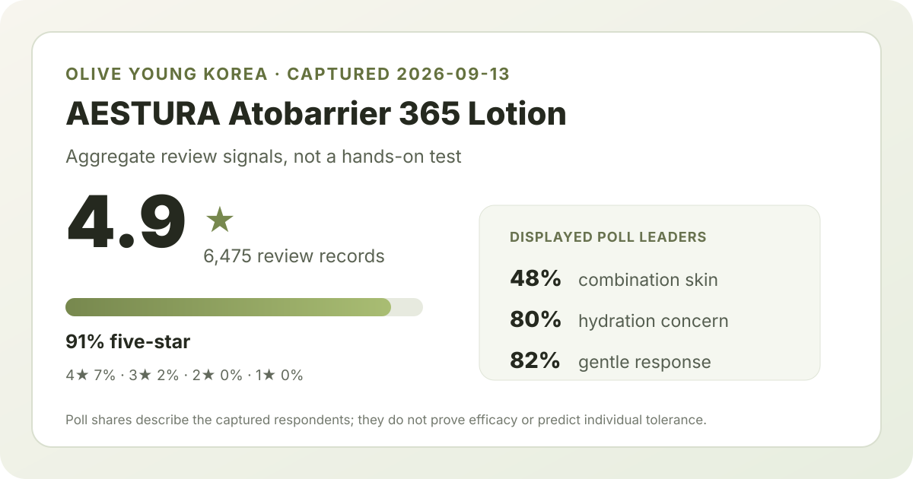
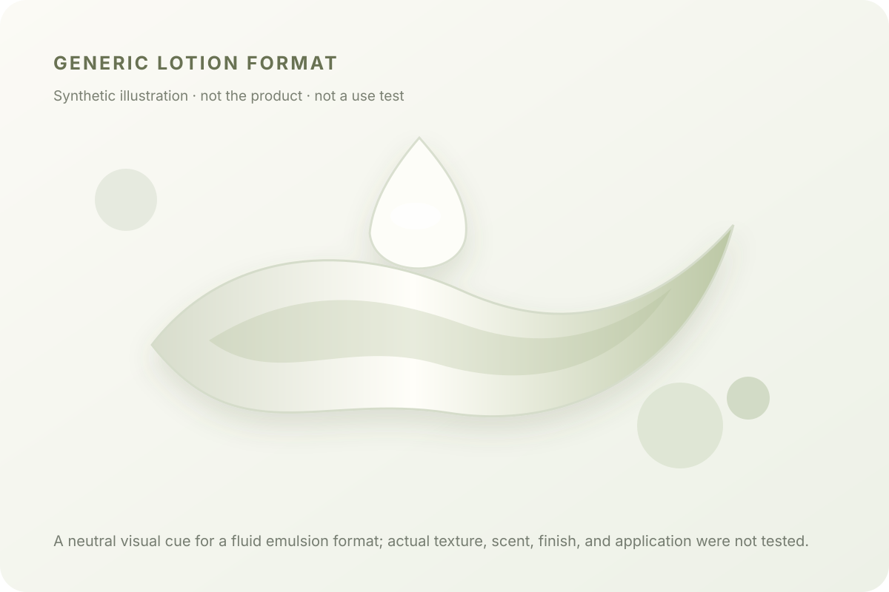

Aggregate data captured September 13, 2026. This article uses the rating, rating distribution, and survey shares displayed on Olive Young Korea. It does not reproduce or translate an individual review, reviewer name, or user photo.

The short version: the listing averaged 4.9 stars across 6,475 review records. Five-star ratings accounted for 91% of the displayed distribution. In separate polls, combination skin was the largest skin-type group at 48%, hydration was the leading concern at 80%, and 82% selected the gentle response.
The average displayed rating was 4.9 out of 5. The detailed distribution showed 91% five-star, 7% four-star, 2% three-star, 0% two-star, and 0% one-star. Because the source reports rounded percentages, these numbers are best treated as the retailer's display rather than converted into exact counts. They describe how ratings were allocated; they do not establish why a person chose a star level or whether any claimed result was caused by the lotion.
A high average with thousands of records is a stronger description of storefront sentiment than an average based on a handful of records. It is still not a clinical measurement, a verified repurchase rate, or a guarantee for a new user. The source does not independently establish that every record represents a unique buyer, and this analysis does not attempt to infer that.
The captured skin-type poll showed 48% combination, 45% dry, and 7% oily. Combination skin was the largest group, but dry skin was close behind. The useful interpretation is about representation: the captured response pool leans heavily toward combination and dry respondents, while oily respondents form a much smaller slice. It would be a mistake to turn those shares into effectiveness scores for each skin type.
For a combination- or dry-skin reader, the poll may feel more contextually relevant because those categories dominate the display. For an oily-skin reader, the 7% share means the captured poll offers less representation. Neither conclusion says the lotion is suitable or unsuitable for an individual. Climate, routine, amount applied, other products, and personal tolerance are not controlled here.
The separate concern poll displayed hydration at 80%, soothing at 18%, and wrinkle/brightening at 2%. These labels reflect which response category people selected on the retailer's questionnaire. Hydration being dominant is consistent with the product's lotion format and merchandising context, but it is not evidence that 80% achieved a measured hydration improvement.
This distinction matters. A questionnaire can summarize what respondents associated with a product without measuring water content, barrier function, redness, wrinkle depth, or pigmentation. There is no control group, treatment protocol, or independently verified outcome in the storefront data used here. The 18% soothing share should not be translated into a medical claim, and the 2% wrinkle/brightening share should not be treated as evidence for or against those outcomes.
The irritation poll showed 82% gentle, 18% ordinary, and 1% felt irritation. Those rounded shares total 101%, which is a normal rounding artifact in the display and a reminder not to reconstruct exact respondent counts. The strongest available signal is that the gentle response clearly led the poll.
Even so, 82% does not guarantee comfort for sensitive skin, and the 1% display does not define a medically verified adverse-event rate. The poll denominator is not shown separately from the overall review count. Individual reactions can depend on ingredients, allergies, barrier condition, and the rest of a routine. Anyone with a known allergy or skin condition should rely on the current ingredient label and qualified medical guidance rather than an average rating.

Only a general format description is reasonable here: a lotion is typically a more fluid emulsion category than a dense cream. That is a category-level explanation, not a firsthand report about this product. I did not apply, smell, spread, or wear the lotion, so I cannot responsibly call its finish light, rich, fast-absorbing, sticky, fragrance-free, or makeup-friendly.
The accompanying visual is deliberately brand-neutral and code-drawn. It communicates the idea of a fluid emulsion without copying the retailer's product photography or a user's photo. Actual texture, finish, scent, pump behavior, and layering should be checked against the current official description and, where practical, a tester or return policy.
At capture, the Korean listing displayed a ₩33,000 reference price and a ₩24,900 promotional price. The title described a 150 ml lotion accompanied by 25 ml of toner and three 3 g cleansing-foam extras. That bundle matters when comparing unit value: the shelf figure is not necessarily a like-for-like price against a lotion-only listing in another market.
Promotions, gifts, seller, availability, tax, shipping, and regional pack sizes can change. This article records a dated Korean price anchor, not a current quote for every shopper. Compare the product and extras actually included at checkout, and do not assume that a similarly named listing has the same formula or package.
This review snapshot did not preserve a complete current ingredient list or verified directions. No ingredient percentage is inferred from the product name, brand family, or marketing language. Even when an ingredient list is available, position alone does not establish dose or clinical effectiveness.
Combination skin was the largest displayed skin-type response at 48%. That makes the poll more representative of combination respondents than oily respondents, but it does not prove better performance for combination skin.
The captured poll showed 82% gentle, 18% ordinary, and 1% felt irritation. This is a respondent-perception signal, not a prediction of individual tolerance or evidence for treating a skin condition.
No. The rating summarizes satisfaction, while the 80% hydration figure identifies the leading concern-poll label. Neither is an instrumental hydration test or controlled trial.
The captured data cannot answer that directly. Format preference, climate, routine, current formula, and verified label directions matter. Compare the lotion and cream as distinct products rather than assuming a shared family name makes them interchangeable.
This analysis did not capture a complete ingredient list, so it does not confirm either. Check the current regional label instead of relying on ratings or older formula discussions.
AESTURA Atobarrier 365 Lotion has a strong captured storefront record: 4.9 stars from 6,475 review records, with 91% of displayed ratings at five stars. The polls are most informative as audience context. Combination and dry respondents dominate the skin-type display, hydration dominates the concern display, and gentle is the leading irritation response.
Those signals justify a place on a comparison shortlist, not a universal recommendation. They cannot establish an individual's outcome, medical suitability, ingredient tolerance, or whether the current regional listing matches the Korean promotional set. Use the aggregate as one input alongside the current label, pack, price, and your own constraints.
← All K-Beauty Data Desk reviews · Best-seller rankings · Skin-poll representation · About & methodology
Published by The K-Beauty Data Desk · Aggregate data captured 2026-09-13. The source data does not independently verify every buyer's identity. No individual review, reviewer name, or user photo is reproduced or translated. I did NOT test the product on my own skin, received no free product, and am not paid or approved by the brand. Check the current source display.
Data basis: aggregate statistics displayed by Olive Young Korea on 2026-09-13. Retail data can change after capture. The ratings and polls are source facts; the interpretation and buying cautions are editorial analysis.